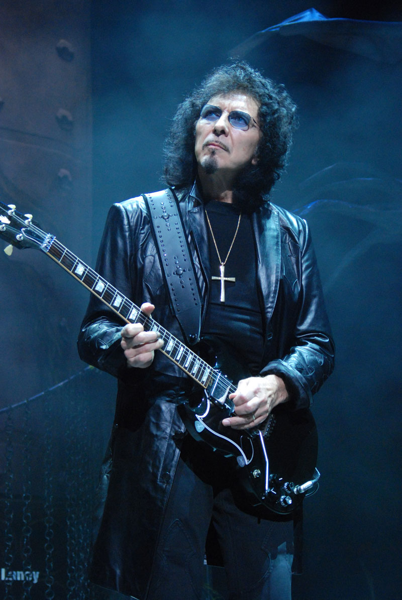
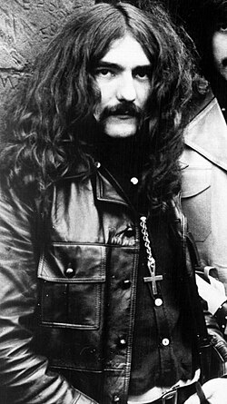
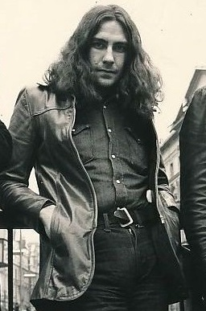
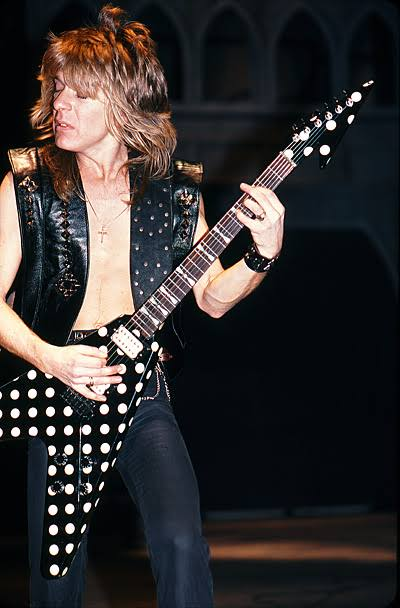
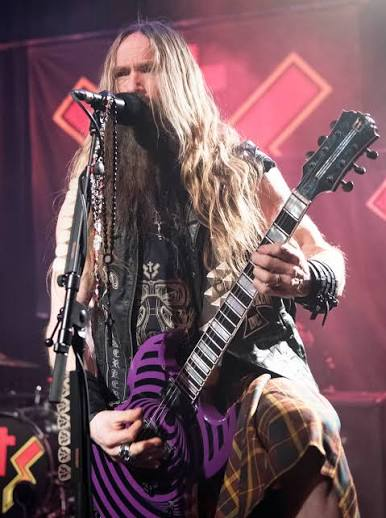

Tony Iommi
Guitarra (Black Sabbath)
1968 — 1979 / Reuniões
John Michael Osbourne (Birmingham, 3 de dezembro de 1948), conhecido mundialmente como Ozzy Osbourne, é um cantor, compositor e musicista britânico. Ganhou destaque internacional na década de 1970 como vocalista da pioneira banda de heavy metal Black Sabbath, sendo amplamente reverenciado como o "Padrinho do Heavy Metal" e o "Príncipe das Trevas".
Nascido em uma família operária na região de Aston, em Birmingham, Osbourne enfrentou uma infância difícil marcada pela dislexia e problemas financeiros. Antes de se dedicar integralmente à música, trabalhou em abatedouros, fábricas e como afinador de buzinas. Encontrou sua verdadeira vocação na música após ouvir os Beatles nas rádios locais.
Em 1968, ao lado de Tony Iommi, Geezer Butler e Bill Ward, fundou o Black Sabbath. Utilizando uma sonoridade baseada no blues pesado combinada com temas ocultistas e sombrios, a banda lançou álbuns seminais como Black Sabbath (1970) e Paranoid (1970), criando as fundações do que o mundo conheceria como heavy metal.
Após ser demitido do Black Sabbath em 1979 devido a excessos, Ozzy foi gerenciado por Sharon Arden (que mais tarde se tornaria sua esposa). Ele recrutou o prodígio da guitarra Randy Rhoads para lançar o aclamado álbum Blizzard of Ozz (1980), contendo os hinos históricos "Crazy Train" e "Mr. Crowley", consolidando uma das trajetórias solo mais bem-sucedidas do rock mundial.
Ao longo de mais de cinco décadas de carreira, vendeu mais de 100 milhões de discos, foi incluído duas vezes no Rock and Roll Hall of Fame e conquistou múltiplos prêmios Grammy. Ozzy quebrou barreiras culturais também na televisão através do reality show The Osbournes, transformando-se em uma lenda viva imortalizada no coração da cultura pop global.
Ele perdeu os dois dedos do meio e começou a trabalhar em uma prensa industrial aos 17 anos (em 1965), sendo seu último dia de trabalho em uma fábrica em Birmingham, Inglaterra. Os médicos disseram-lhe que ele nunca mais tocaria guitarra.Mas um chefe de cozinha da fabrica mostrou Mostrou os discos de Jazz Django Reinhardt, que tambem tocava com dedos limitados, inspirando ele a voltar a tocar e assim nascendo o que chamamos de Heavy Metal
Em julho de 2025, o mundo do Rock silenciou para a partida física de John "Ozzy" Osbourne. O homem que desafiou os limites da biologia, da sanidade e do próprio tempo descansou, mas o seu mito tornou-se oficialmente indestrutível. O Príncipe das Trevas deixou os palcos da Terra para assumir seu trono definitivo na eternidade da história da música.
Assista à homenagem especial ao pai do heavy metal, relembrando sua trajetória e a conquista póstuma no BRIT Awards 2026:
🎬 Assistir Homenagem no YouTubeAbaixo estão os músicos fundamentais que acompanharam Ozzy Osbourne, divididos entre a formação clássica que inventou o Heavy Metal e os guitarristas prodígios de sua icônica jornada solo.

Guitarra (Black Sabbath)
1968 — 1979 / Reuniões

Baixo (Black Sabbath)
1968 — 1979 / Reuniões

Bateria (Black Sabbath)
1968 — 1979 / Reuniões

Guitarra (Solo)
1979 — 1982

Guitarra (Solo)
1987 — Presente (Intermitente)